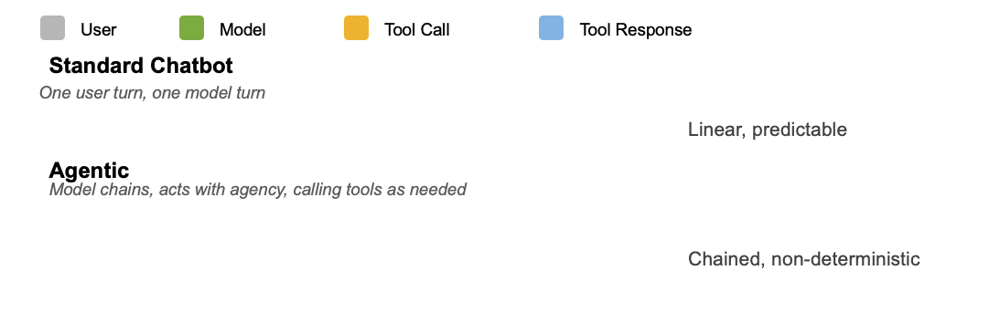
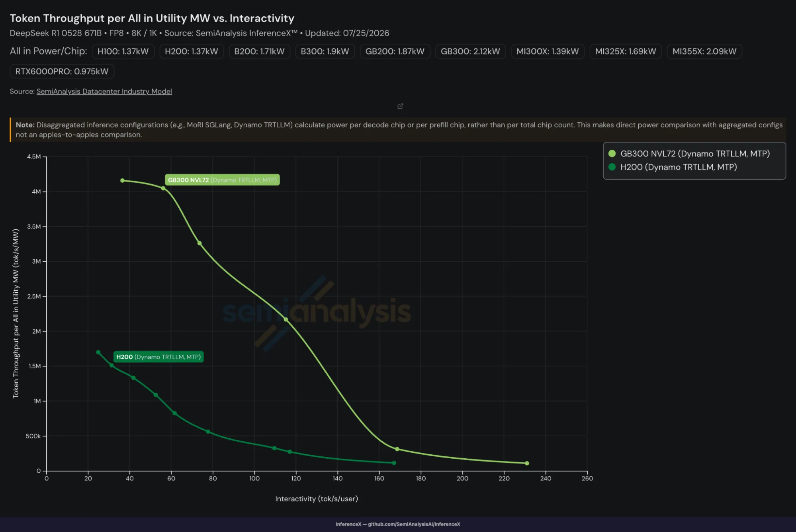
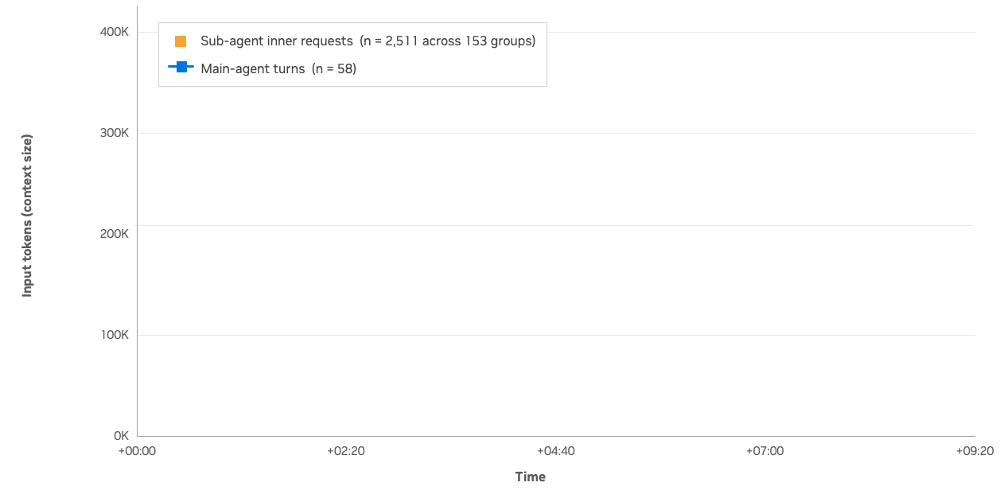
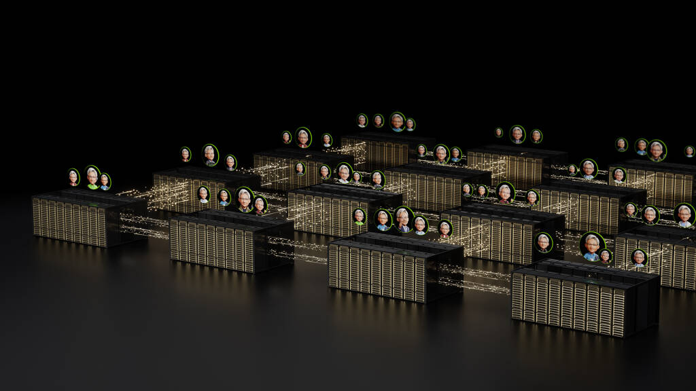
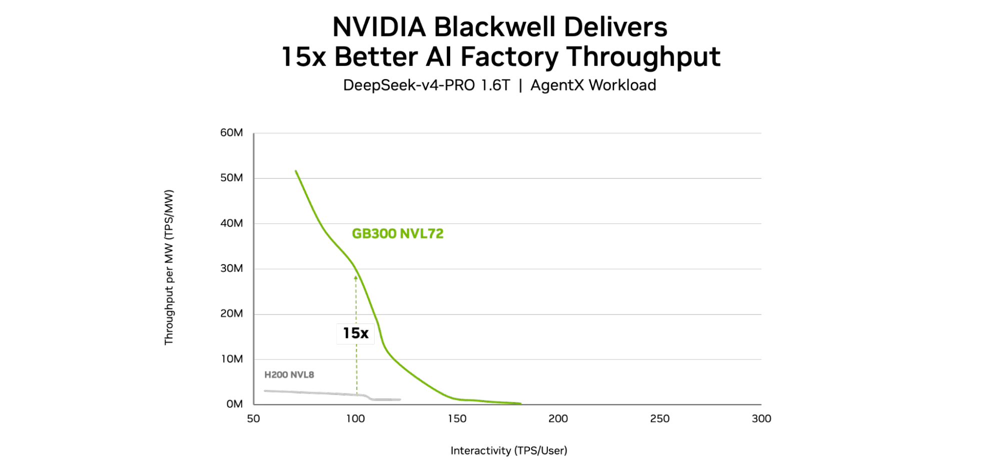
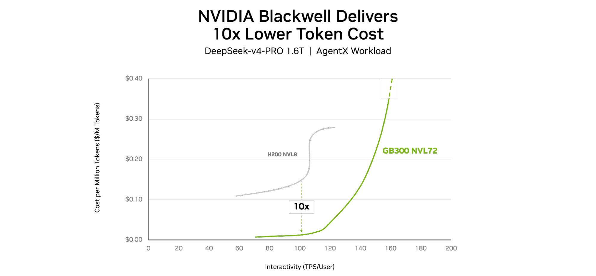
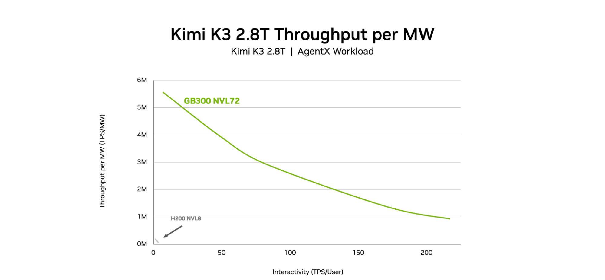

Agentic推理已经不是「一问一答」。一整个会话在多步agentic流程里反复推理、调工具、开subagent，并且把不断增长的历史一路带着走。OpenRouter的State of AI报告（基于真实世界约100万亿token用量）显示：平均每个请求的prompt token大约涨到4倍，而单条agentic请求要吃掉普通聊天15倍的token。
算力商最关心的是「每一兆瓦能产出多少有用的agentic吞吐」。这篇NVIDIA博客用SemiAnalysis的AgentX基准测了一轮Vera Rubin NVL72与GB300 NVL72的每瓦成绩，并公开了把GB300做到数量级领先的系统级工程。下面把数字、方法与可复现口径逐条拆给你。
老的基准喜欢固定序列（比如8K prompt/1K回复）测server吞吐。但真实agent不是这么跑：它一条会话里模型调用、工具使用、还在增长的历史串在一起，而非固定问答。会话产生可变推理序列（见下），要测的就不再是“静态能跑多快”，而是“能不能支撑住长上下文prefill、KV cache复用、交互式decode、工具调用间断、以及真实并发下的分布式MoE”。

AgentX是SemiAnalysis开源的InferenceX套件里专门测agentic-coding的基准。做法是把真实Claude Code会话语料按AIPerf客户端一条条重放：每个系统吃同一份录制的流量，因此差异反映的是serving栈本身，而不是为基准定制的调优。
重放会保留每段会话的上下文、输入输出序列长度，以及原轨迹里的推理时间和工具调用延迟：正是这些间隔把原会话的时序拆下来，复现真实KV cache容量压力。它再变动并发来扫throughput与interactivity的权衡曲线。
旧式InferenceX的固定8K/1K场景不是没用，但它只代表受控的定长serving。AgentX出现后，这类固定序列场景已在该套件被降级成 “maintenance mode”。一种参考：固定序列下GB300 NVL72相对H200（同样是DeepSeek-R1）就能到约40x token/MW（图3），但那测不到agent生产流量。

这也引出为什么测交互性要配四把尺：E2E normalised interactivity、标准interactivity、E2E latency、TTFT。兆瓦口径 + 交互体感口径，才是agentic负载的真实成绩单。

在AgentX的DeepSeek V4-Pro负载、达到160 token/s/user交互目标时，Vera Rubin NVL72的AI-factory每兆瓦吞吐最高做到GB300 NVL72的30倍。换句话说：同样一座电力和散热预算的电厂，Vera能扛起多得多的agentic推理容量。

注意口径：这批Vera Rubin NVL72成绩由NVIDIA用AgentX负载测得，尚在SemiAnalysis复核中；先把“30x”理解为厂商自测的预览值。
同一套AgentX负载下，Blackwell GB300 NVL72相对前代H200 NVL8：DeepSeek V4 Pro 1.6T上每兆瓦吞吐最高高约15x，也就是在相同电预算里能维持明显更多的响应式agentic吞吐。

吞吐优势会直接转成单位经济学：GB300 NVL72相对H200 NVL8每百万token成本最高低约10x。对运维方意味着：同样的电力+基础设施预算，能支撑显著更大的交互式agentic容量；或者更直接：同等容量、运营成本大幅下降。

模型规模越大，差距越明显。到Kimi K3 2.8T：GB300 NVL72在相似交互档下每兆瓦吞吐约为H200 NVL8的80x，同时把可达交互性前沿从H200能覆盖的范围一路推到约215 token/s/user。

GB300把大MoE模型做到在“上下文越积越长 + 并发越来越挤 + decode需求量越拉越满”时仍扛住响应式吞吐，靠的是serving runtime、kernel与scale-up fabric三层协同：
MoE serving运行时： SGLang、TensorRT-LLM、vLLM都能把expert计算摊到整个NVL72域里；Wide Expert Parallelism与DeepEP把expert工作更均匀地放到更多GPU上，提升并发agent请求可用的有效batch。
MoE kernel与通信重叠： DeepGEMM系kernel、MXFP4/MXFP8这类混合精度，加上fused的MoE路径，减少数据在各expert阶段间搬移；把expert并行通信与Tensor Core计算重叠后，token吞吐自然上来。
Dynamo： 把prefill和decode拆成各自独立伸缩的worker池，每段按自己性能需求配；session-aware（用session ID串起同一条agent run里的模型调用、tool span与trace）；KV-cache-aware router用“cache重叠 + worker负载”选目标，减少多余prefill，让多轮复用时保持响应式。
NVLink scale-up fabric： 把72块GPU串成高带宽scale-up域，才能满足“协调整架”地搬compute、memory、expert-parallel通信和KV cache。
Vera Rubin NVL72展示的是当一个机架级系统专门为长上下文、交互式、分布式agentic推理调过之后能做到什么。更完整的Vera Rubin平台把同一思路铺到整条链路：Rubin GPU处理大上下文与高效decode，Vera CPU接管工具执行与KV-cache offload，Groq 3 LPX负责超低延迟交互。
跨越整座AI factory，则是NVLink 6、ConnectX-9、BlueField-4与Spectrum-X负责在不同资源间搬token、context与工具结果；Dynamo、Attention-FFN分离、NVFP4、TensorRT-LLM WideEP与投机解码去把这些处理器上的执行串协调起来。方向就一句话：少重算、少等待，会话越来越长也让交互不掉速，把恒定电预算更多变成有用的agentic输出。
参考：https://developer.nvidia.com/blog/nvidia-vera-rubin-and-blackwell-set-a-new-standard-for-agentic-ai-performance-per-watt